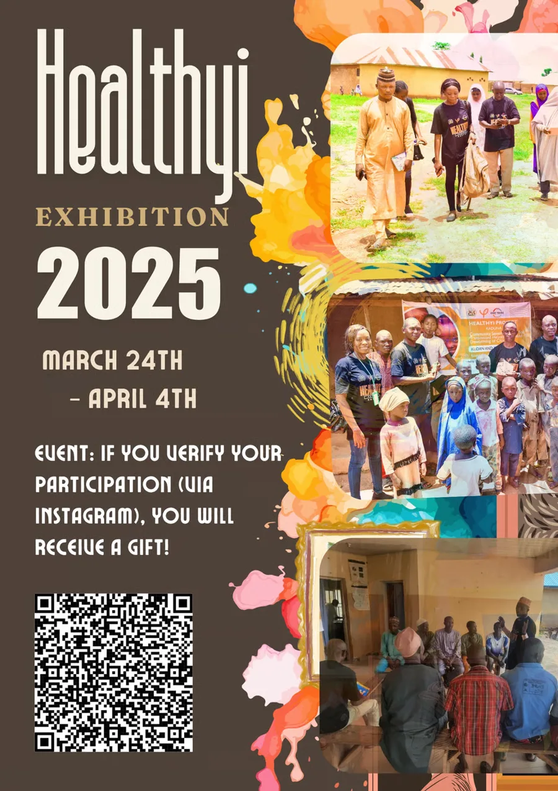
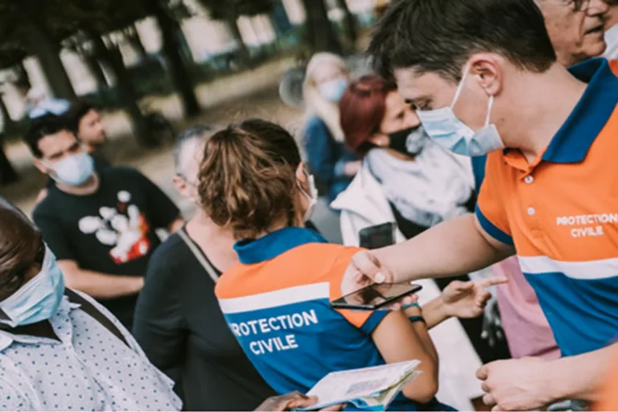
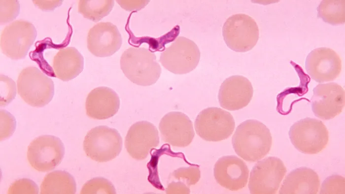
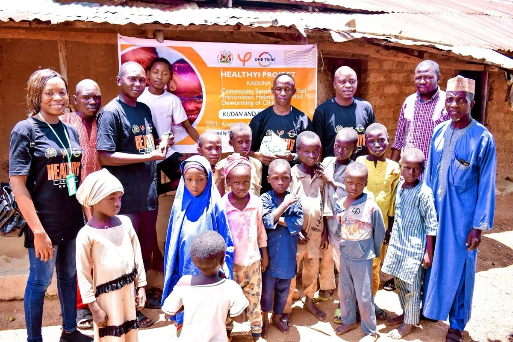
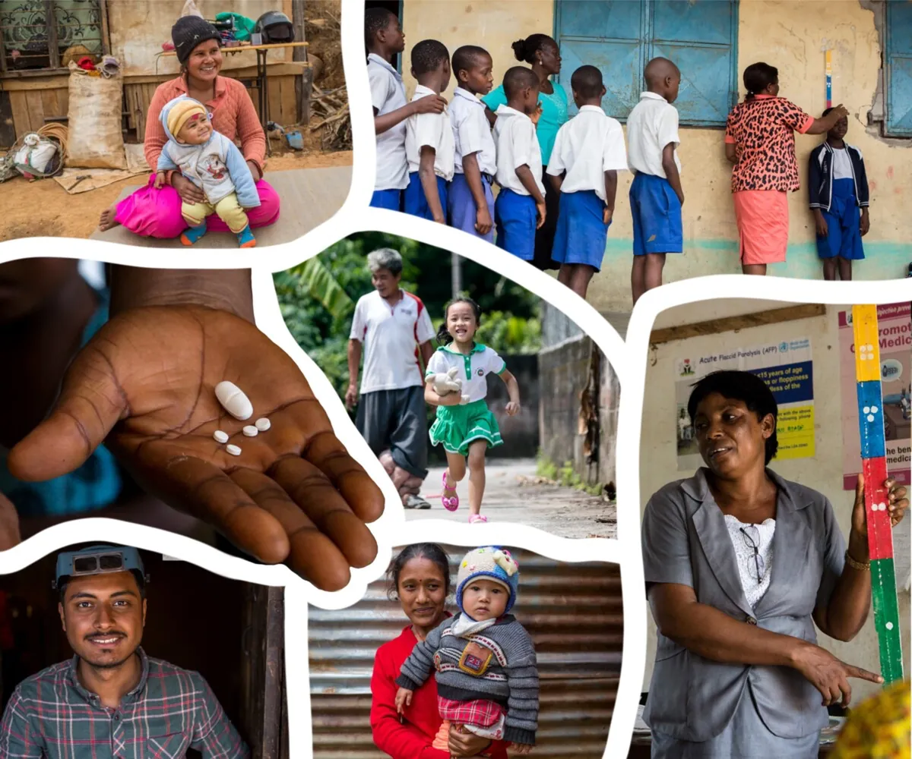
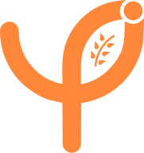

Student-led · by Youth Impact
Beyond medicine, beyond limits.
Healthyi is a student-led organization fighting neglected tropical diseases (NTDs) through medicine delivery, health education and public awareness in the communities that need it most.

Highlights
What we've been up to


Who we are
A student-led group working where care is hardest to reach.
We are Healthyi, a group of student leaders who help people affected by neglected tropical diseases. We started with medicine and grew into education and awareness work, because lasting health needs all three.
Learn more
What is an NTD?
Twenty diseases that affect over a billion people.
Neglected Tropical Diseases are a group of infectious diseases that mainly affect people in tropical and subtropical regions. They are closely tied to poverty and receive far less attention and research funding than higher-profile diseases. The World Health Organization recognizes twenty NTDs, spanning parasitic, bacterial and viral infections.
Read about African sleeping sickness
Stay in touch
Recent news
Healthyi is more than a student-led organization. It is a source of hope and transformation, with a commitment that reaches far beyond delivering essential medicines.
Our student leaders believe our impact goes beyond the distribution of medicine. We help people rise above their circumstances and strengthen their communities through education and public awareness. We are not only treating diseases; we are building a foundation for thriving communities.
Neglected tropical diseases are at the center of our work. These often-overlooked conditions affect tropical regions, prolonging suffering and holding back progress. Healthyi is dedicated to reducing the impact of NTDs in places such as Algeria, Egypt, Yemen, Iran and Nigeria, where communities have long been burdened by these diseases.
Our first shipment of albendazole to rural areas of Nigeria showed our commitment. Our vision goes further: we aim to create a ripple effect through essential care, reducing child mortality, supporting productivity and, most importantly, empowering communities to shape their own futures.
Join us on this journey. Together we can change the story for impoverished communities, offering not only health but dignity, hope and the promise of a brighter future.
How we work
Three ways we fight NTDs
Intervention
Mass drug administration and medicine donations, delivered with local partners so treatment reaches people fairly.
Education
Culturally sensitive materials that teach hygiene, safe water use and disease prevention, including for low-literacy audiences.
Awareness
Campaigns, journalism, exhibitions and student competitions that put neglected diseases back in the conversation.
Meet the students behind Healthyi.
View membersStructure
Organization chart
Program Coordinating Team
- Research local issues and circumstances
- Create materials for each project
- Monitor and process materials
- Make decisions with other departments
- Evaluate project performance
Strategic Planning Team
- Conduct foundational research
- Set the overall direction of each project
- Communicate with other departments
- Prepare regular financial and administrative reports
- Monitor overall financial availability
Marketing Team
- Build brand awareness
- Promote Healthyi's activities
- Find marketing tools and channels
- Share the marketing strategy
- Monitor and support each role
Home / Our Activity
Our Activity
Field projects in Nigeria, Rwanda and India, built on intervention, education and awareness.
Our solutions
Intervention, education, awareness
Intervention
Deworming campaigns and medicine distribution with local government and NGO partners.
Education
Posters, coloring books and hands-on guides such as DIY water filters.
Awareness
Community sensitization, clean-up days and awareness campaigns with student partners.
2023
Nigeria Mass Drug Administration
Funded by Youth Impact and supported by One Tribe Initiative.
Target districts
| LGA | Community | Target population | Endemicity |
|---|---|---|---|
| Kudan | Likoro | 443 | Endemic |
| Hunkuyi | 614 | Endemic | |
| Dokan Kudan | 783 | Endemic | |
| Kauru | Kadage | 697 | Endemic |
| Yadi | 578 | Endemic | |
| Dandaura | 813 | Endemic | |
| Total | 3,928 | ||
Results
Children who received deworming medication, compared with the baseline target, and community awareness before and after the project.


Rwanda
Research and awareness in Huye District
India
Medicine for 3,000+ people, and lessons that last.
As Head of Program Coordination, Haeun Kwon led an initiative in India addressing NTDs in one of the city's most underserved communities. With team members Ahyoung Chung, Junsung Lee and Sebin Hwang, she organized the donation and distribution of medication for over 3,000 people, partnering with a local NGO to deliver medicines efficiently and fairly.
The team also launched a culturally sensitive health education campaign, using visuals, storytelling and printed materials to teach hygiene, safe water use and disease prevention to a largely illiterate population. They worked directly with residents to understand their needs and adapt to local realities, pairing short-term relief with long-term tools for prevention.
Education materials
36 guides, infographics and storybooks created for the India program. Each opens in Google Drive.
Home / Event
UN SDGsProject Idea Competition · Nigeria
Develop a project that addresses one or more of the UN Sustainable Development Goals and pitch it to the Healthyi team.
How to participate
Three steps to enter
Brainstorm
Develop a project idea that aligns with one or more UN SDGs.
Organize
Make a pitch deck that explains your project idea.
Submit
Send your pitch deck to youthimpact.healthyi@gmail.com.
Pitch deck options
- Business or non-profit organization
- NTD-related policy proposal
A sample guide is available on request.
Evaluation criteria
- Alignment with SDGs: how well does the project address one or more UN SDGs?
Full criteria are listed on the competition poster.
Submissions
Student projects
Our stories
Latest from Healthyi
Partners
Our collaborators
Healthyi
Student-led NTD organization

Youth Impact
Founding organization and funder
Kaduna State Government
Partner for the 2023 deworming program
One Tribe Initiative
Field support in Kaduna
Interested in partnering with Healthyi? Get in touch and tell us about your organization.
New project
Healthyi × MEDAID
NTD Care Application: bridging the gap in global health.
To address this gap, Healthyi and MEDAID have launched a collaborative project that combines Healthyi's public health outreach expertise with MEDAID's mobile health technology framework.
Diagnosis
Help users recognize symptoms of common NTDs and know when to seek care.
Prevention
Practical guidance on hygiene, safe water and protection from disease vectors.
Education
Accessible learning content drawn from Healthyi's field materials.
Home / Contact
Contact Us
Questions, partnerships or volunteering. Write to us and we'll get back to you as soon as we can.
Working hours
10 AM – 7 PM, Monday to Friday
youthimpact.healthyi@gmail.com
YouTube
Support our work
Become a monthly helper
A small monthly gift funds medicine, education materials and outreach in communities affected by neglected tropical diseases.
Sign up